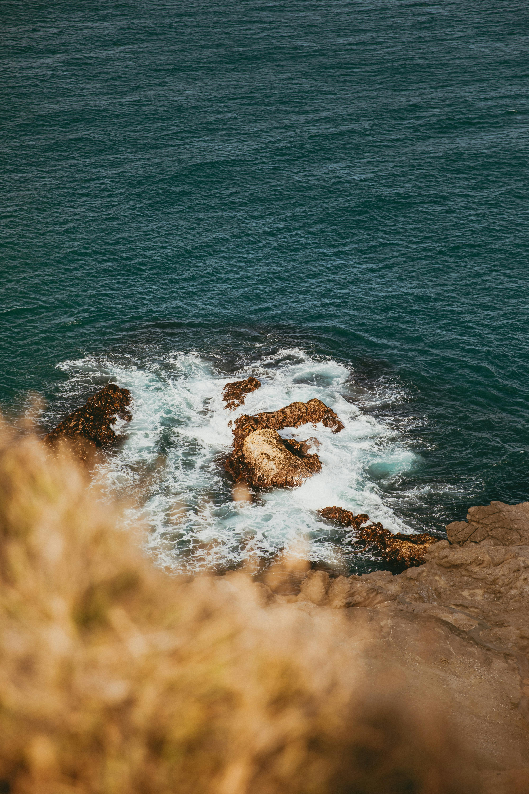
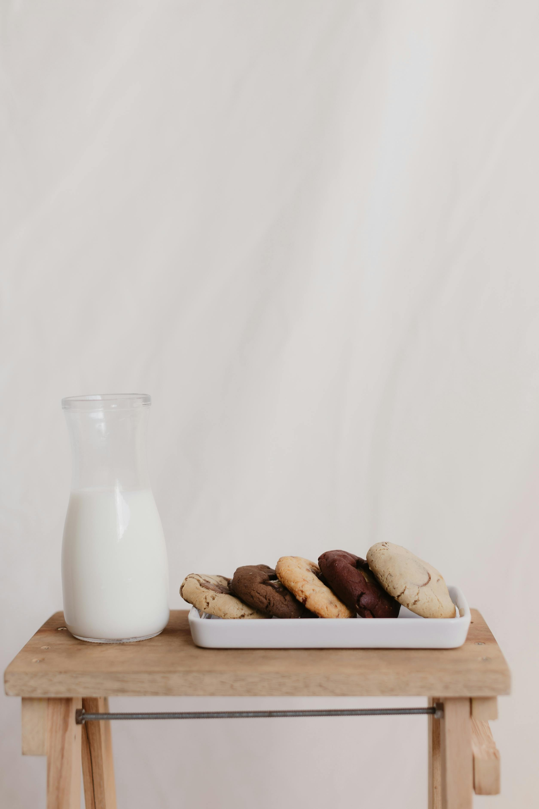
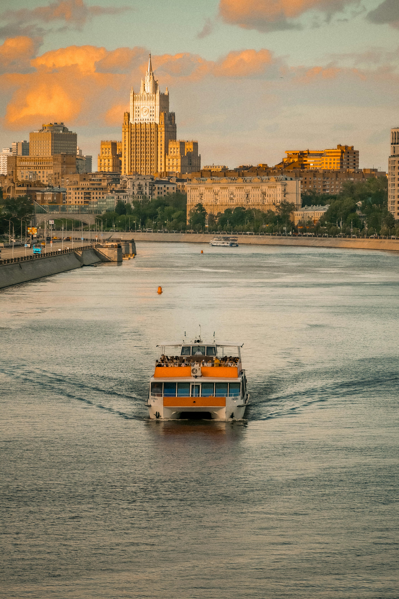
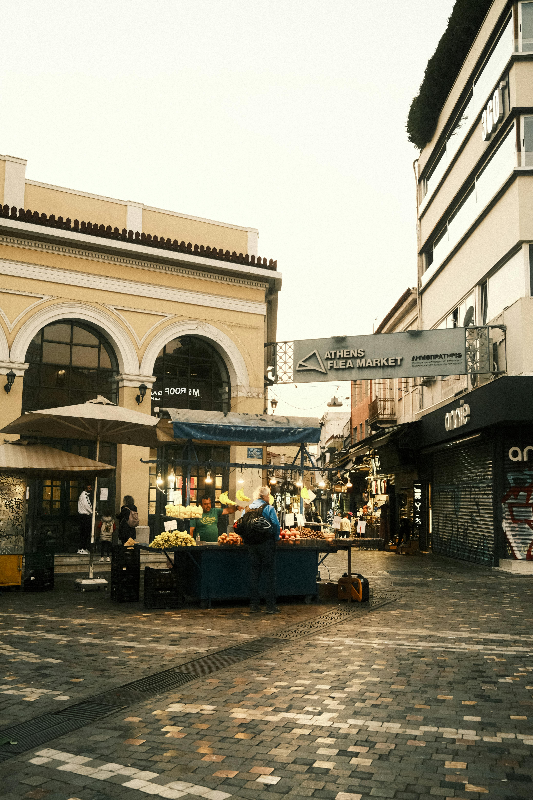
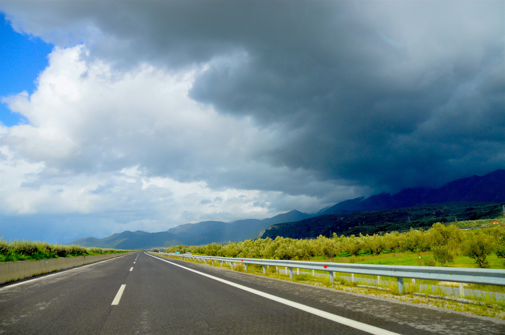

Best Travel Tips
- Best Time to Visit: April to June and September to October, when the weather is pleasant and the crowds are smaller.
- Local Customs: Greet with “Kalimera” (Good morning) and dress modestly when visiting religious sites.
- Transportation: Use buses, ferries, and trains for travel between cities and islands.
- Cash: Carry some cash (Euros) for smaller establishments.
- Safety: Greece is generally safe, but stay vigilant in crowded areas.
- Language: Learning basic Greek phrases can enhance your experience.
Best Cuisines and Dining Recommendations
Experience the delightful flavors of Greek cuisine, featuring fresh ingredients:
- Moussaka: Layered eggplant and minced meat with béchamel sauce.
- Souvlaki: Grilled meat skewers served with pita and tzatziki.
- Tzatziki: Yogurt, garlic, and cucumber dip.
- Baklava: Sweet pastry with nuts and honey syrup.
- Greek Salad: A mix of tomatoes, cucumbers, olives, and feta cheese.
Best Accommodation Options
Consider these options for a comfortable stay:
- Luxury Hotels: Experience top-notch services at hotels like the Grand Bretagne in Athens.
- Budget Hostels: Affordable options in cities like Athens and Thessaloniki.
- Traditional Villas: Rent a villa on islands like Santorini for a unique experience.
- Guesthouses: Local guesthouses offer a cozy atmosphere and personalized service.
- Airbnb: Various options from apartments to unique stays across Greece.
Best Local Culture and Traditions
Immerse yourself in Greek culture:
- Festivals: Vibrant celebrations, especially during Easter.
- Mythology: Explore stories of gods and heroes that shaped Greek history.
- Music and Dance: Enjoy traditional music and dances like the sirtaki.
- Culinary Traditions: Dining is a social experience with family and friends.
Best Top Tourist Attractions

- The Acropolis: An iconic symbol of ancient Greece.
- Santorini: Famous for its stunning sunsets and beautiful architecture.
- Meteora: Monasteries perched atop towering rock formations.
- Delphi: Once the center of the ancient world, home to the Oracle.
- Navagio Beach: A stunning beach known for its shipwreck.
Best Transportation Guides
Explore your options for getting around Greece:
- Air Travel: Major airports in Athens and Thessaloniki.
- Ferries: Convenient connections between islands.
- Buses: KTEL buses for budget-friendly mainland travel.
- Car Rentals: Explore remote areas at your own pace.
- Public Transport: Efficient metro and bus systems in cities.
Best Outdoor Activities and Adventure
Enjoy the great outdoors in Greece:
- Hiking: Trails in places like Mount Olympus and Samaria Gorge.
- Water Sports: Kayaking, snorkeling, and scuba diving in the Aegean Sea.
- Windsurfing: Popular on islands like Paros and Naxos.
- Boat Tours: Explore hidden beaches and coves.
- Mountain Biking: Thrilling routes in scenic areas.
Best Shopping and Souvenirs
Find unique souvenirs to take home:
- Olive Oil: High-quality Greek olive oil is a perfect gift.
- Handmade Pottery: Unique and colorful pieces reflect Greek culture.
- Jewelry: Traditional designs often incorporate ancient motifs.
- Textiles: Woven products like blankets and tablecloths.
- Local Wines: Greece has a rich wine culture worth exploring.
Best Weather and Best Time to Visit
Greece enjoys a Mediterranean climate:
- Summer (June - August): Hot and dry, ideal for beachgoers.
- Autumn (September - November): Mild temperatures, perfect for exploring.
- Winter (December - February): Cooler, with opportunities for skiing in northern regions.
- Spring (March - May): Pleasant weather, blooming landscapes, and fewer tourists.